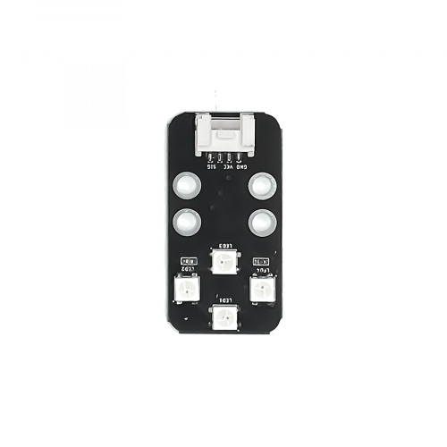

led_onboard — Onboard LED
Chức năng chính và chức năng của led_onboard
xController được tích hợp sẵn 2 đèn LED đa màu RGB trên board. Đèn LED RGB là đèn LED đặc biệt, có thể phát sáng với nhiều màu khác nhau (lên đến 16 triệu màu). Màu của đèn LED được tổng hợp từ 3 đèn màu đỏ (Red), xanh lục (Green), xanh lam (Blue) bên trong.
Các LED màu này có độ sáng từ 0 đến 255. Để thay đổi màu đèn LED RGB, chúng ta sẽ thay đổi độ sáng của 3 LED màu này.
{kind=link}
Function
- showLED(whichLED, redValue, greenValue, blueValue);
Hiển thị đèn led trên mạch xController, với các tham số:
whichLED: LED RGB cần thay đổi màu sắc, nhận 1 trong các giá trị là 0 (cả 2 LED), 1 (LED trái), 2 (LED phải). Trong chương trình trên, chúng ta dùng giá trị 0 để đổi màu cả 2 LED trái phải trên xController.redValue: Độ sáng của LED đỏ.greenValue: Độ sáng của LED xanh lục.blueValue: Độ sáng của LED xanh lam.
- showLed(0, 0, 0, 0);
Tắt LED
Sample Code
Bật tắt hai LED Onboard
#include <xcontroller.h>
XController xcon;
// the setup function runs once when you press reset or power the board
void setup() {
}
// the loop function runs over and over again forever
void loop() {
xcon.showLed(1, 255, 0, 0); // change color led 1
xcon.showLed(2, 0, 255, 0); // change color led 2
delay(1000); // wait for a second
xcon.showLed(0, 0, 0, 0);
delay(1000); // wait for a second
}